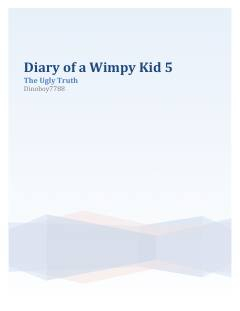

DOGreg Hefflining o'smirlik davridagi qiziqarli va kulgili sarguzashtlari davom etadi.
Greg Heffli o'zining kundaliklari orqali o'smirlik davridagi qiyinchiliklar, do'stlik va oilaviy munosabatlar haqida hikoya qiladi. Ushbu beshinchi qismda u o'sib borayotgan yoshlik davrining 'achchiq haqiqatlari' bilan yuzma-yuz keladi.